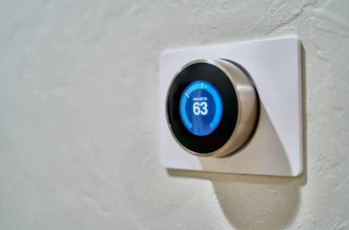

Arquitectura de un sistema IoT
Para comprender cómo opera el IoT a nivel de desarrollo de software y hardware, se divide comúnmente en una estructura de 4 capas fundamentales:
- Capa 1: Dispositivos (Sensores y Actuadores)
- Sensores: Dispositivos físicos que capturan magnitudes del entorno (temperatura, humedad, luz, presencia, aceleración, ritmo cardíaco).
- Actuadores: Componentes que transforman señales eléctricas en acciones físicas (motores, relés, electroválvulas, pantallas LCD, zumbadores).
- Capa 2: Conectividad y Redes (Edge / Gateway)
- Es el medio por el cual los datos capturados viajan de forma digital. Utiliza protocolos inalámbricos de corto y largo alcance (Wi-Fi, Bluetooth, Zigbee, LoRaWAN, redes celulares 4G/5G).
- Capa 3: Procesamiento en la Nube (Cloud Computing) o Borde (Edge Computing)
- Los datos masivos (Big Data) llegan a servidores centralizados o plataformas de procesamiento en la nube (como AWS IoT, Google Cloud IoT o servidores MQTT propios) donde se almacenan y analizan mediante algoritmos o Inteligencia Artificial.
- Capa 4: Interfaz de Usuario / Aplicación (Dashboard)
- Paneles visuales accesibles desde ordenadores o aplicaciones móviles que permiten al usuario final monitorear el estado del sistema en tiempo real y enviar comandos de control a los dispositivos remotos.
